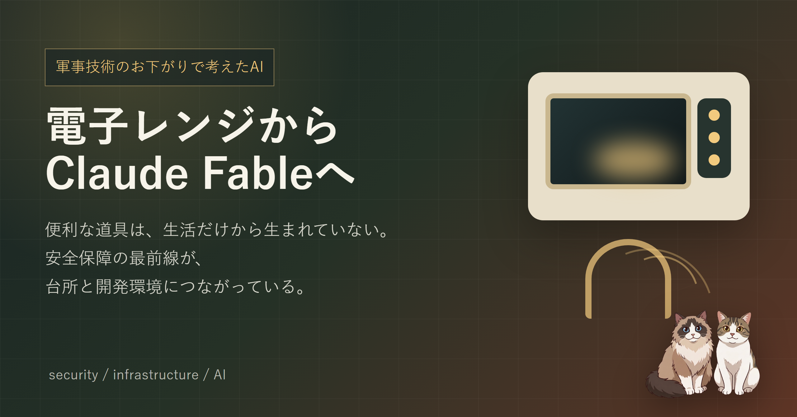

Claude Fable 5 と Claude Mythos 5 のニュースを読みながら、ふと電子レンジのことを思い出した。軍事技術のお下がりとして降りてきた道具と、逆に安全保障の側へ引き戻されつつあるAI。便利な道具ほど二重に使えるので、能力が上がるほど「任せないこと」も決めたい、という覚え書きです。
Claude Fable 5 と Claude Mythos 5 のニュースを読みながら、台所で電子レンジを回している自分にふと違和感が来た。安全保障・輸出管理・サイバー防衛みたいな、ふだんの開発作業からは少し遠い言葉が、毎日触っている道具のすぐ横にある。
電子レンジは、もともとレーダー技術の周辺から出てきた、と言われている。Raytheon の Percy Spencer が、マグネトロンのそばで熱が発生することに気づき、そこから調理器具につながった、という有名なエピソード。最初から「昼ごはんを温める機械」を作ろうとしていたわけではない。敵機を見つけるための技術のそばにあったものが、何十年かして台所に置かれている。変だけど、現実にそうなっている。
こういう話は電子レンジだけではない。インターネットの源流に ARPANET。GPS も安全保障の文脈が強い。ドローン・暗号・衛星通信・材料工学・半導体・ロボット。全部を「軍事のお下がり」と雑に言い切るのは乱暴だが、社会インフラ・IT・製造のかなりの部分に、安全保障の投資と要求が絡んできたのは確かだと思う。
国家が本気でお金を出す場面はたいてい切実で、「負けられない・間に合わせる・小さく・安く・速く・壊れず・遠くまで届いて・敵より先に分かる」が同時に要求される。その圧力が、技術をかなり乱暴に前に押す。それが良いか悪いかは簡単には言えない。気持ち悪さもある。でも、見ないふりはしない方が良さそうだ。
Anthropic は 2026-06-09 に Claude Fable 5 と Claude Mythos 5 を発表し、2026-06-12 にはアクセス停止が告知された。最初は「軍事や安全保障の技術が民間に降りてくる話」として読んでいたが、よく考えると今回は少し逆向きだった。
民間企業がAIを作り、一般のプログラマーが使い、コードを書かせ・調査させ・脆弱性を探させる。便利だなと思っていたら、その能力が高すぎて、今度はアメリカ政府が安全保障上の管理対象として扱い始める。軍事から生活へ、ではない。生活と開発現場に来た技術が、もう一度、安全保障の場所へ引き戻される。ここが今回いちばん面白いところかもしれない。
特に引っかかったのは、サイバーセキュリティ・生物・化学・モデル蒸留のような高リスク領域に、最初から強い線が引かれていたこと。ふつうのソフトウェアなら「できることが増える」はだいたい歓迎で終わるけど、AIの能力がある線を越えると、同じ「できる」が急に別の意味を持ってしまう。
電子レンジは台所に来た時点でほぼ無害な道具だ。火傷はするけど、国家が管理するようなものではない。でもAIは少し違う。同じモデルが、バグ修正にも・セキュリティ監査にも・攻撃の自動化にも・研究支援にも使えてしまう。しかも使う人によって意味が変わる。
「同じ包丁が料理にも凶器にもなる」という古い例えがあるけど、AIの場合はもう少し面倒。包丁そのものが、料理本を読み、段取りを組み、材料を探し、横で手順まで考えてくれる。そりゃ管理したくなるよな、と思った。もちろん、強すぎれば防御側や研究者が困るし、緩すぎれば危ない使い方に広がる。どちらに振っても文句は出るし、たぶんどちらにも理がある。面倒だけど、面倒なまま扱うしかない。
自分は安全保障の専門家ではないし、軍事技術にも詳しくない。普段やっているのはバックエンド・インフラ・AI連携まわりの、地面に近い仕事だ。だからこういう大きい話を書くと腰が引ける。でも、AIエージェントを日常の開発に使っている側として、他人事でもないなと思った。
怖いと面白いが同時に来る感じ。雑に熱狂すると危ないし、雑に拒否してもたぶん置いていかれる。小さくできることは、こういうことだと思う。
最近、自分でもサーバー診断のプロンプトを作るときに「AIには提言だけさせて、本番サーバーは触らせない」と決めた。あれも同じ話だったのかもしれない。能力が上がるほど、任せる範囲をちゃんと削る。なんでもできる道具に、なんでもさせない。地味だけど、たぶん大事。
電子レンジを見てもふだんレーダーのことなんて考えない。冷凍ごはんを温めて、猫のごはんの時間を気にして、それで終わる。でもたまに思い出すくらいはしてもいい気がする。生活の道具は、生活だけから生まれていない。
AIも同じ道を通っていそうだけど、速度がずっと速い。さらに今回は、民間から安全保障へ戻る流れも同時に起きている。Claude Fable 5 と Mythos 5 のニュースは、その速度を目の前で見せられた感じだった。「お下がり」と言うには、少し近すぎる。